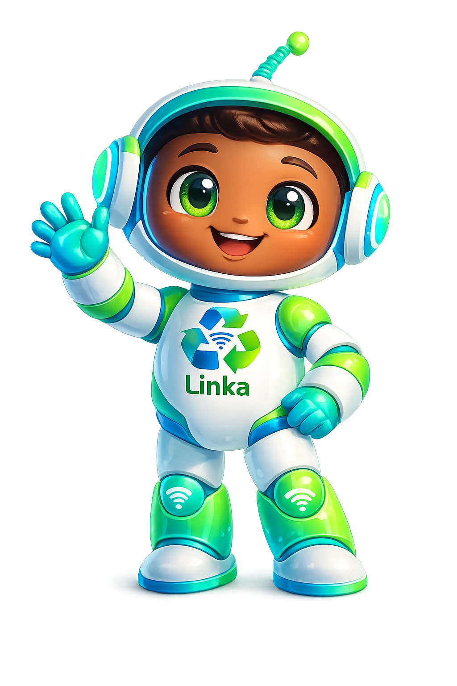

🏠 Início
📍 Pontos de Coleta
🎮 Jogos
📖 Cursos
🔁 Transferência
👤 Perfil
🚪
Sair
Pontos de Coleta
Conectando ao banco de dados...
📍 Minha Localização

Linka 🌱
✖
Olá! Eu sou a
Linka
, assistente virtual da
GreenLink ♻️
Posso te ajudar com
protocolos, pontos de coleta
e dúvidas sobre
sustentabilidade
.
➤